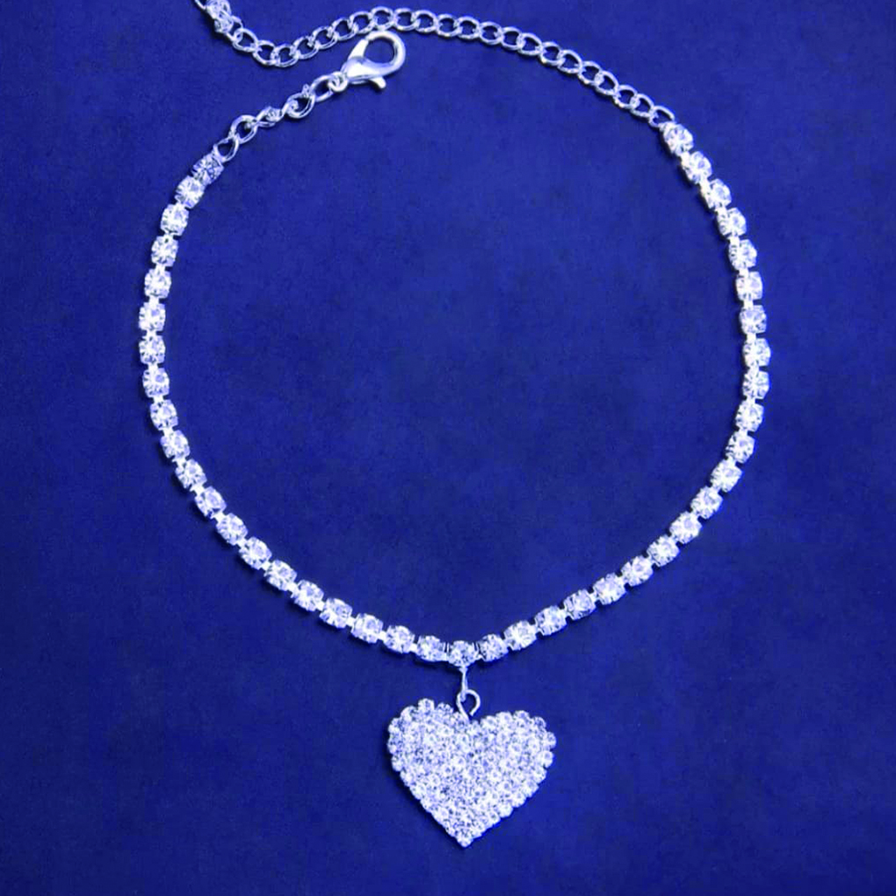
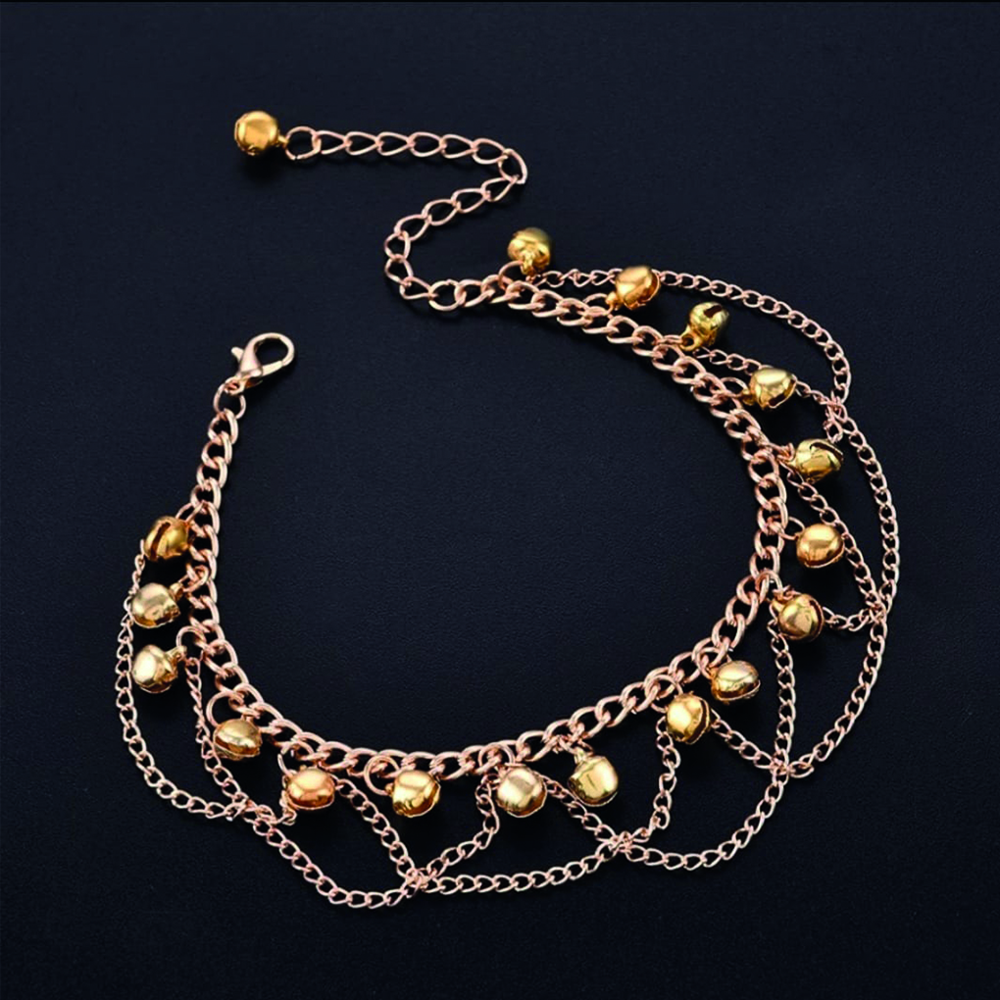
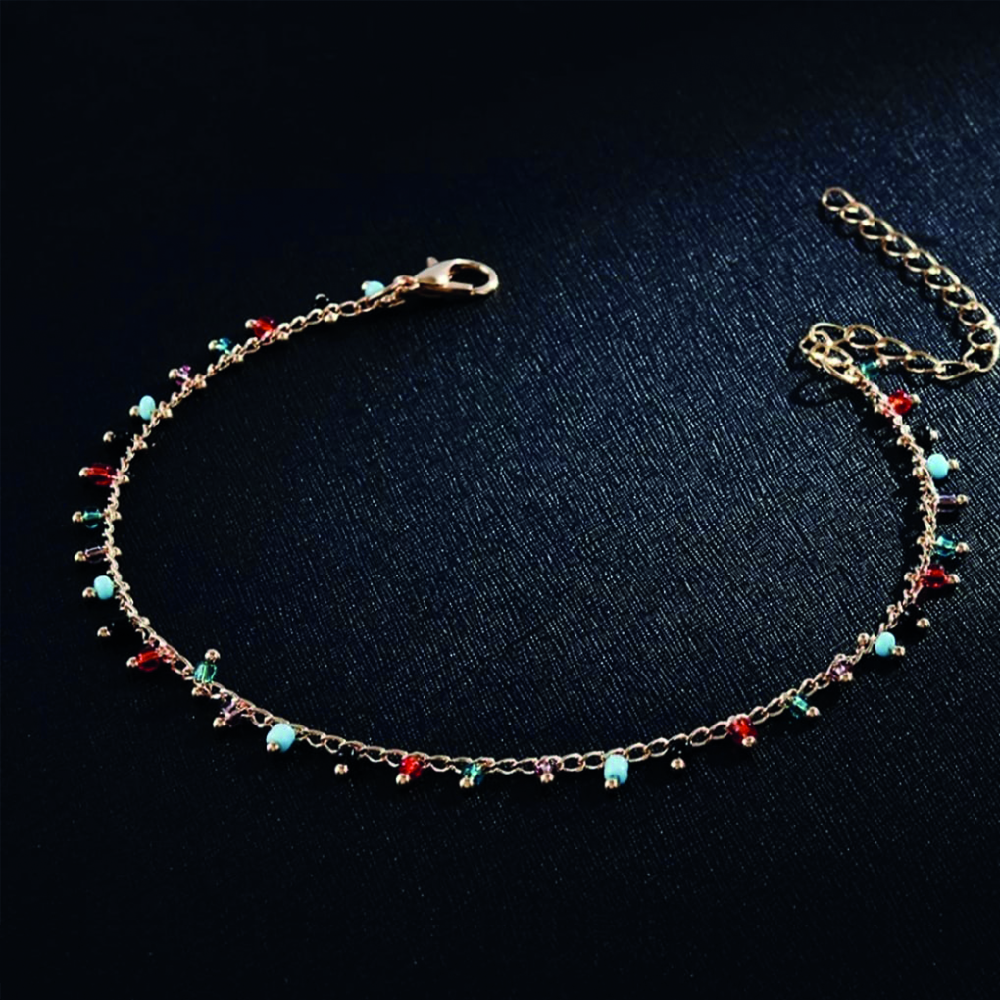
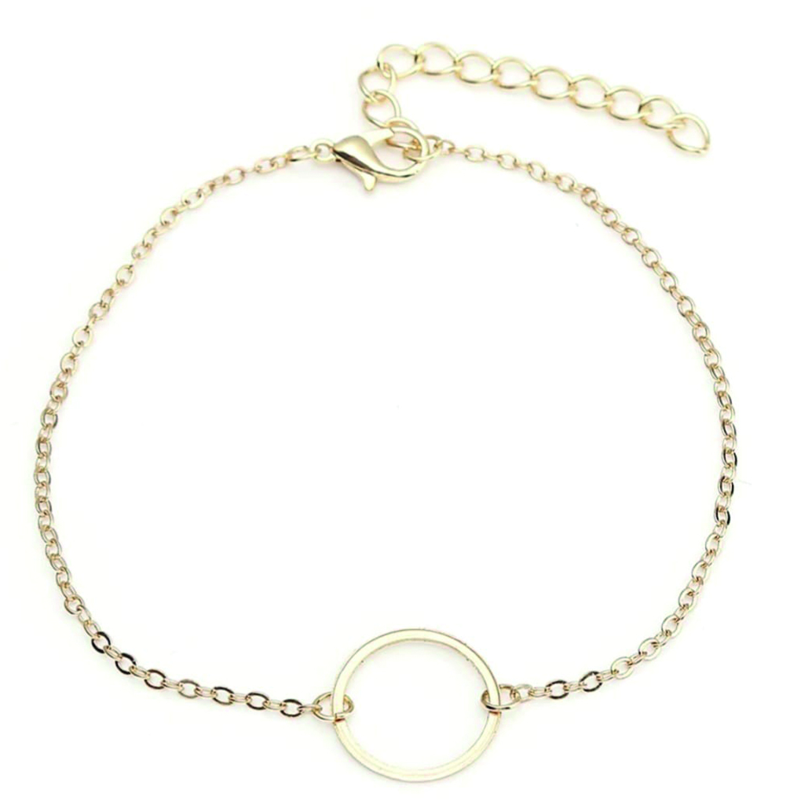
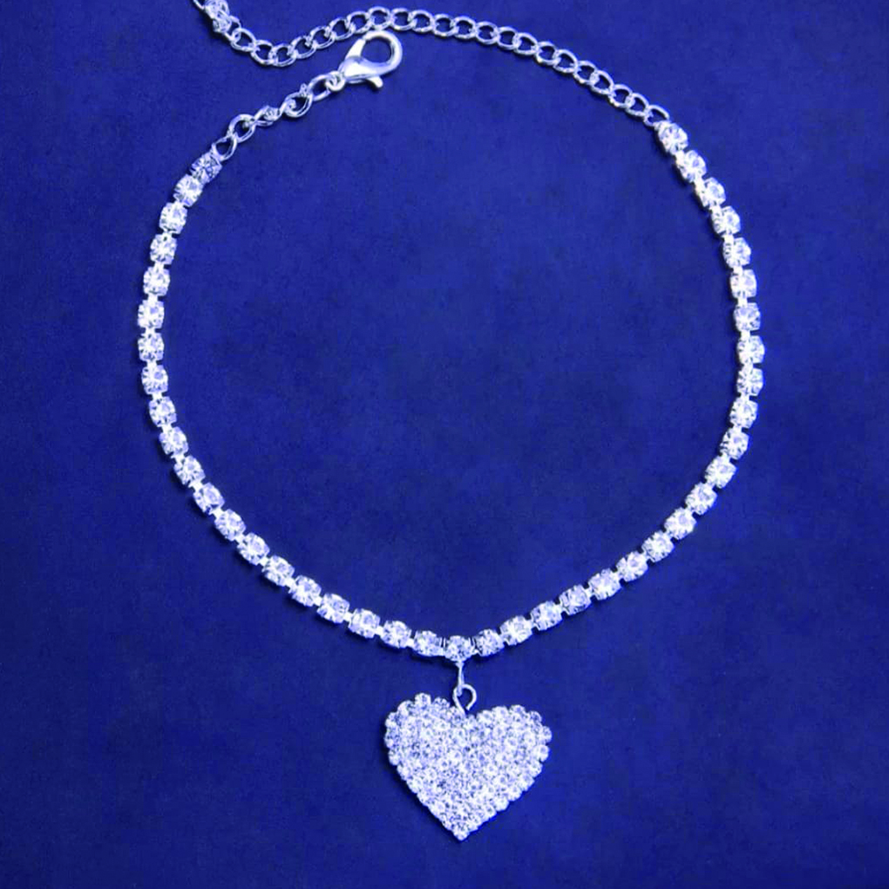
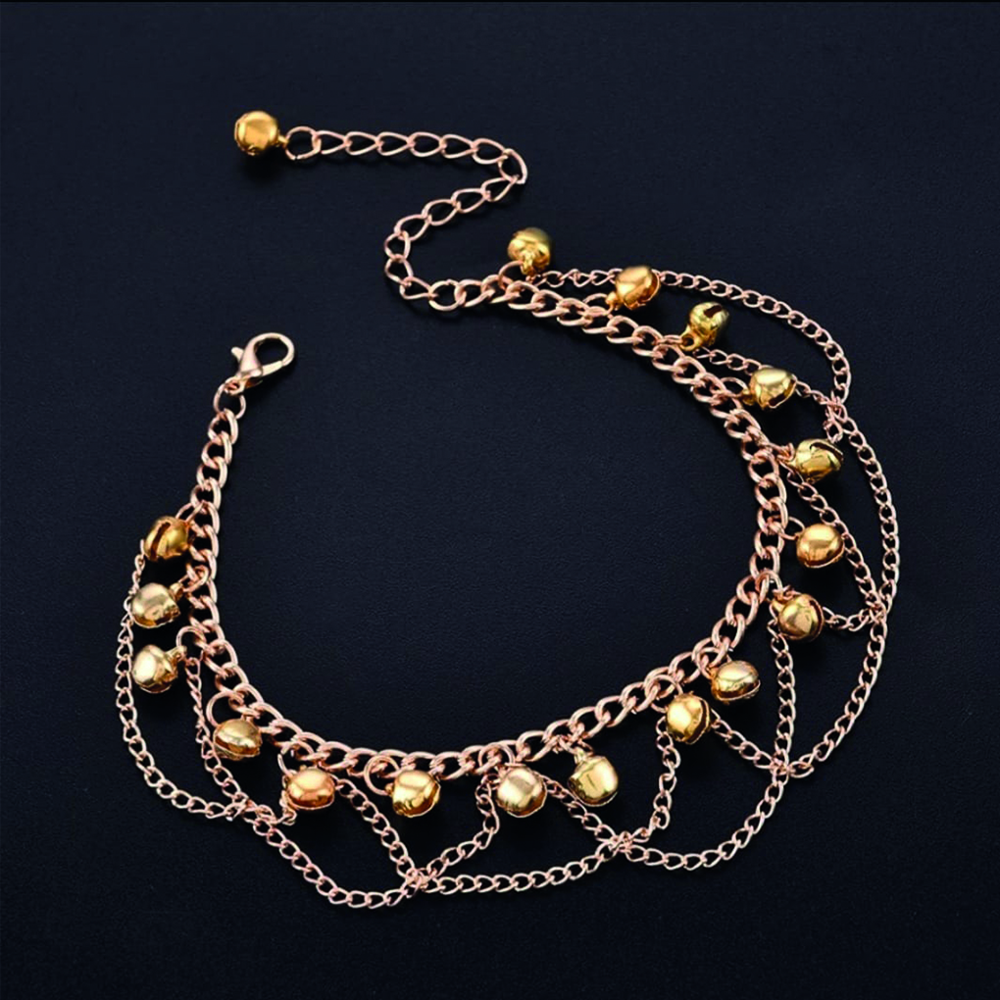
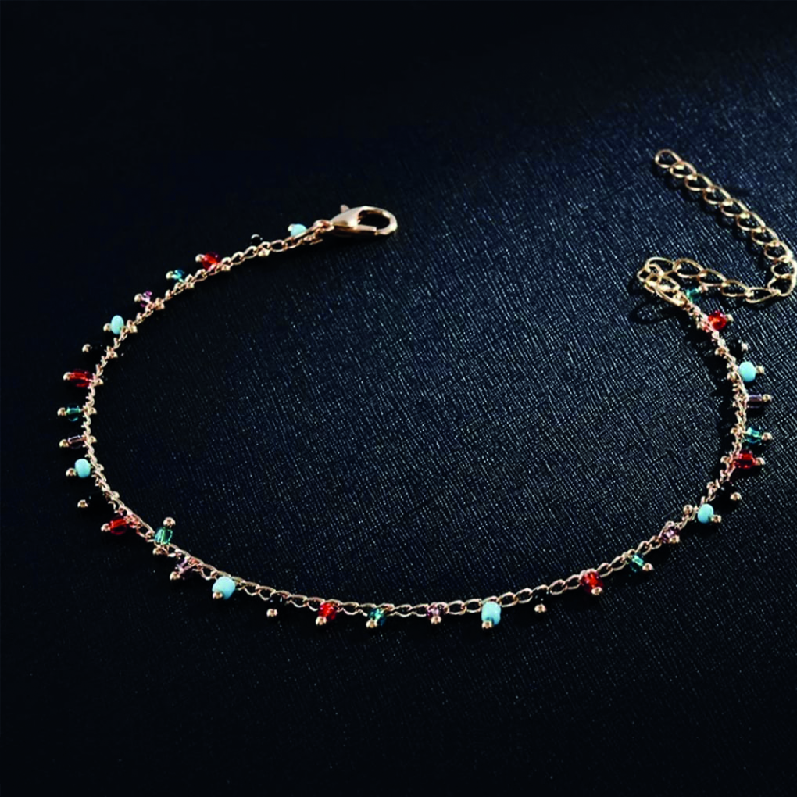
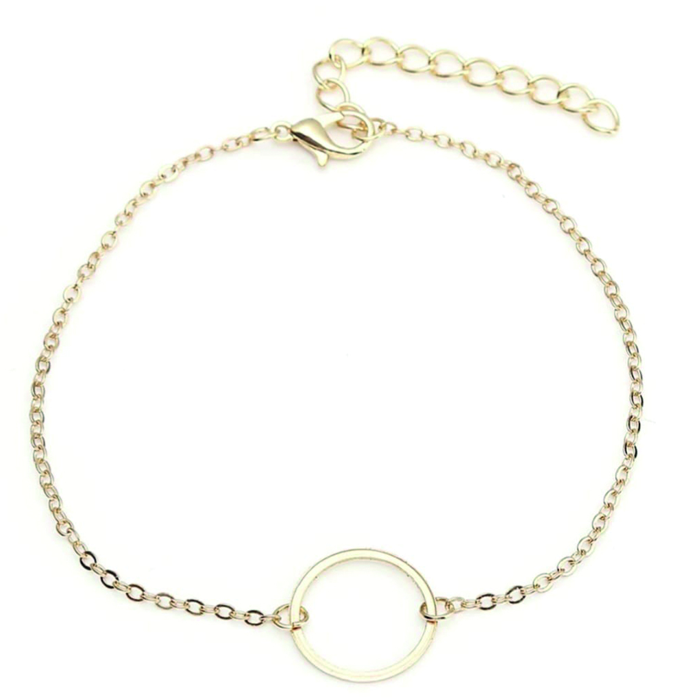

Gofi Jewelry
Customizable Special Jewelry
 







Bangles
If we look at the history of bangle, 2000 BC and BC. In the excavations made in the 7000s, it was found that women in Iran wore bangles. The bangle, which is in the antique jewelry section, has a meaning like a kind of engagement symbol in the Southeast Anatolia and Eastern Anatolia regions, which is widely used in Anatolia, and they wanted to tell that the women who wear bangles are engaged by making noise even when walking. According to another rumor, in the Ottoman period, women who did not have a union wore bangles to imply this. Optionally, the material of the bangle is selected and if there is a stone in the design, it is added from the options of diamond, emerald or ruby. Depending on the options, the price of the bangle also varies.
You can get more information about bangles from us by using the button below.